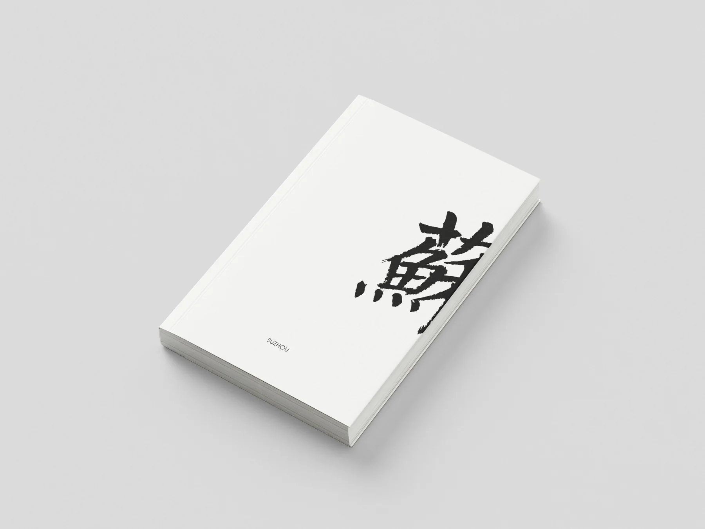
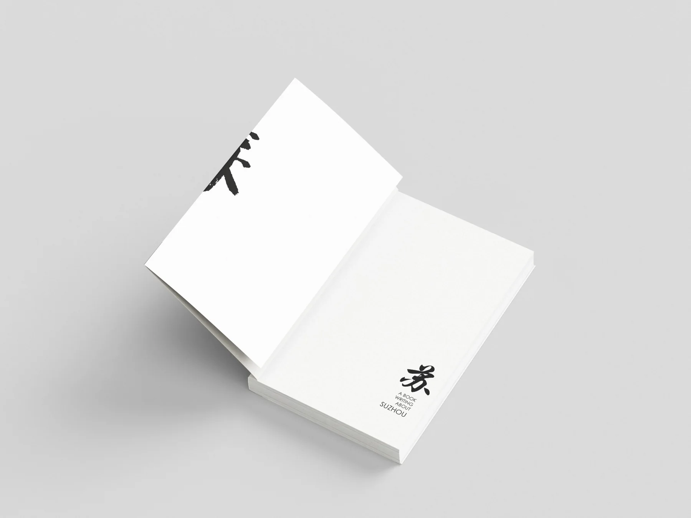
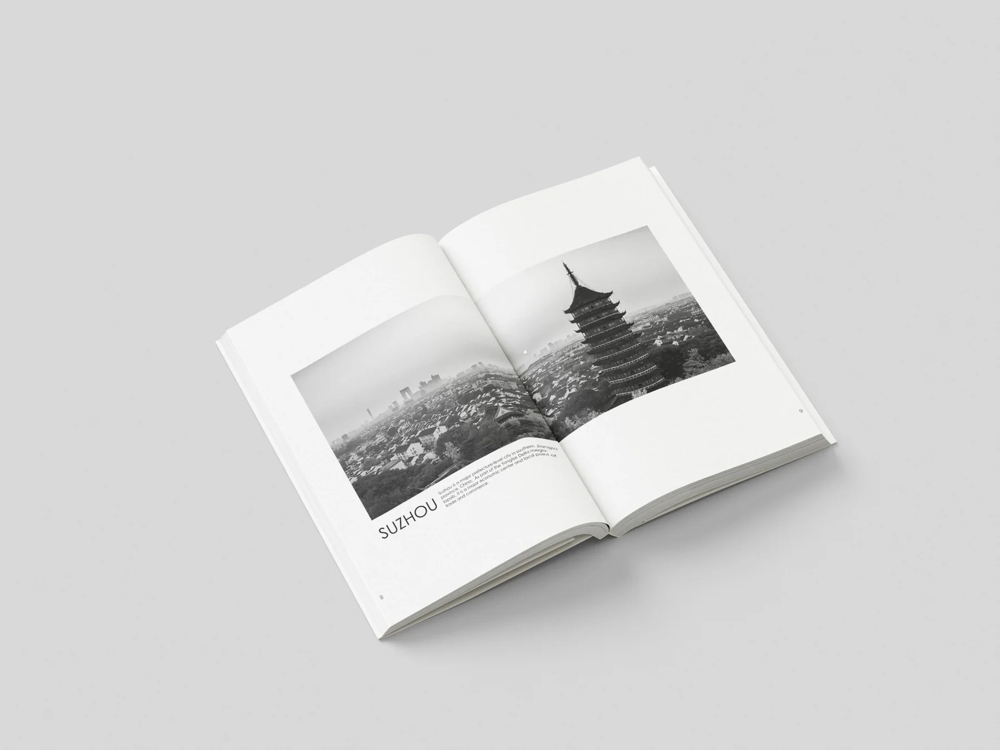
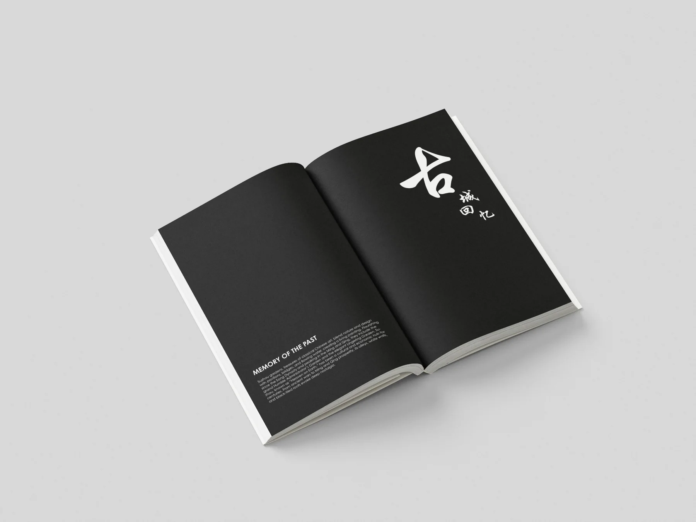
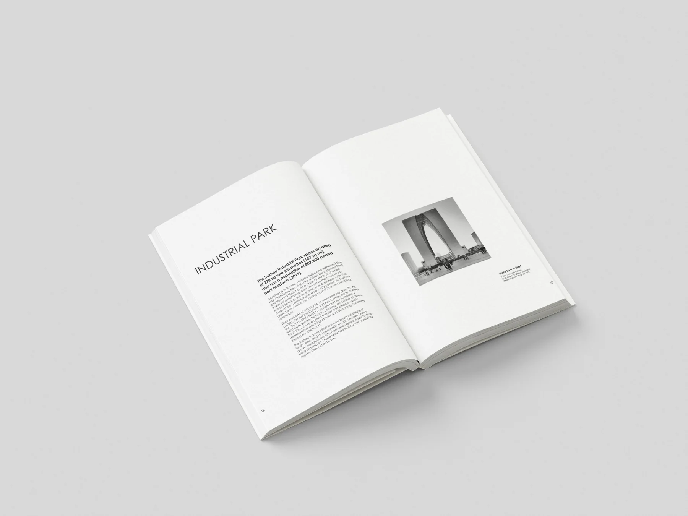
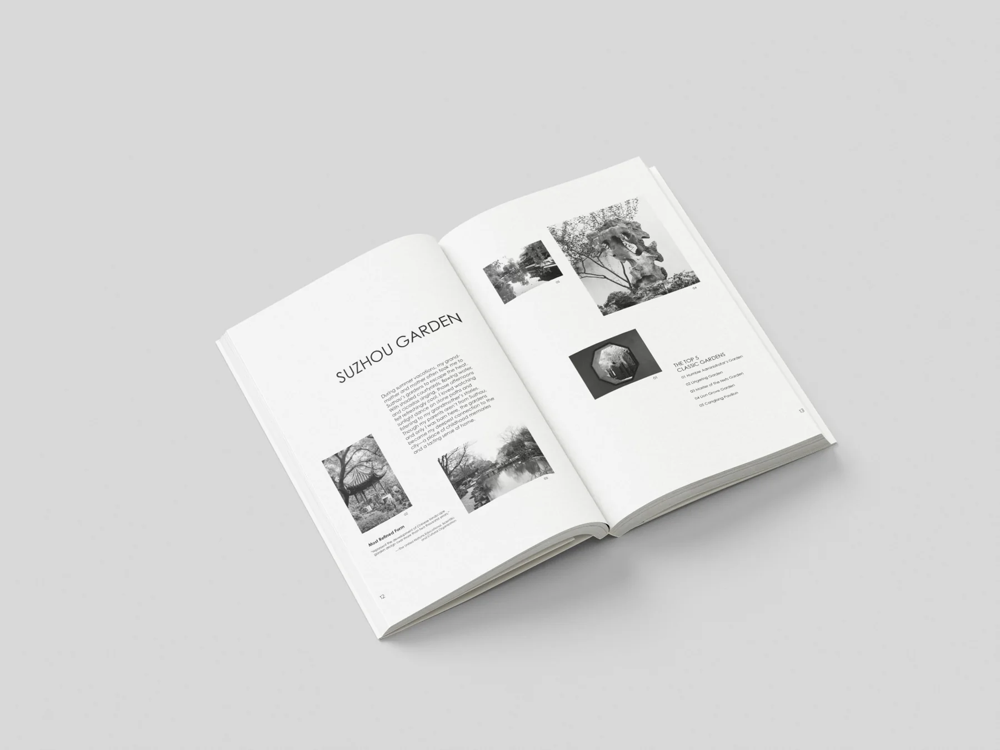
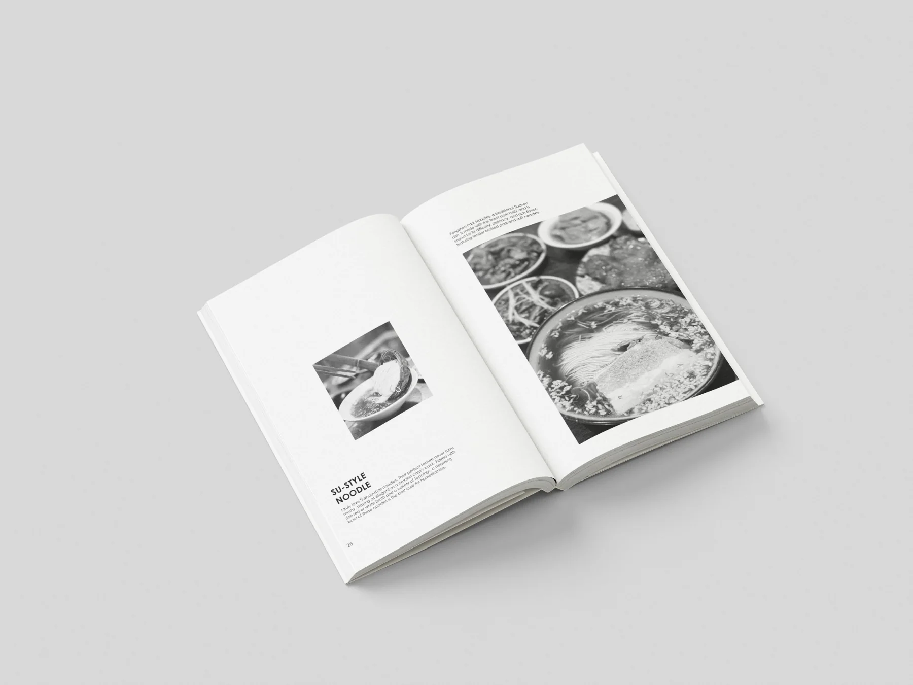
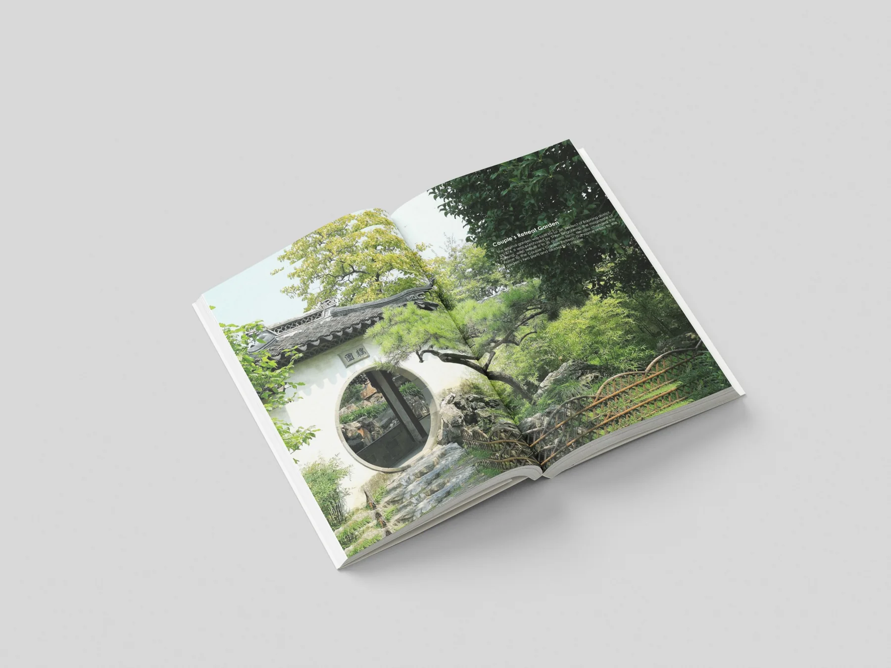

WANG
WANGEDITORIAL DESIGN / PUBLICATION← Back to work
PLACE / PEOPLE / CULTURE
SUZHOU苏州
A visual journey through the city, culture and everyday life of Suzhou.

01 / THE BOOK
A portrait of Suzhou in print.
SUZHOU is an editorial book exploring the city through architecture, gardens, local culture and everyday life. Photography and typography come together to shape a visual narrative of place.
The publication pairs expressive Chinese calligraphy with a restrained typographic grid. Black-and-white photographs, quiet margins and occasional full-color spreads create a rhythm between documentation and atmosphere.
02 / SELECTED SPREADS
Pages from the city.
Selected spreads showing the book’s image-led narrative and editorial system.







SUZHOU / EDITORIAL DESIGN← All projects